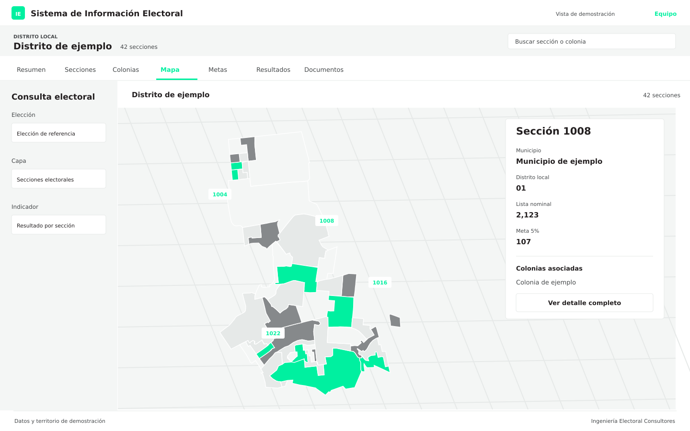

Tres formas de capturar.
Lectura asistida, captura básica y captura completa. El equipo elige la modalidad y revisa la información antes de guardarla.
Consulta resultados por sección y registra el trabajo territorial con dos herramientas desarrolladas por Ingeniería Electoral Consultores. Las dos demostraciones de esta página funcionan con datos sintéticos.


Secciones, colonias, mapas, resultados y metas. La información del territorio, organizada para su consulta.
Pasa por las funciones para conocerlas. También puedes probar los controles de la vista: buscar una sección, cambiar la capa o filtrar la tabla.
Selecciona una sección del mapa.
La vista general da acceso al detalle de cada sección, sus colonias y los documentos asociados. Las cifras y los contornos son de demostración; no corresponden a un ámbito real.
Registro asistido o manual, estructura por sección y cobertura de representantes. Desde el teléfono del equipo de campo.
El OCR prepara los datos de la credencial para su revisión. La captura básica y la completa permiten registrar la información a mano.
Revisa los datos del ejemplo y guarda la captura.
Lectura asistida, captura básica y captura completa. El equipo elige la modalidad y revisa la información antes de guardarla.
Consulta posiciones de la estructura y espacios de representantes generales y de casilla, con titular y suplente. El registro RG/RC es organización interna y no equivale a la acreditación oficial.
Identifica lo guardado en el teléfono, lo que está enviándose y lo recibido. Consulta el avance total, municipal y distrital según el corte disponible.
El registro manual se conserva localmente y puede enviarse al recuperar conexión con la aplicación abierta. El OCR requiere conexión. Los estados de esta demostración son locales y se reinician al recargar la página.
Solicitar una demostraciónFunciones identificadas en cada producto. El Sistema de Información Electoral se usa en el escritorio para consultar; la App de Captura Electoral se usa en el teléfono para registrar y dar seguimiento.
| Función | Sistema de Información Electoral | App de Captura Electoral |
|---|---|---|
| Consulta por ámbito autorizado (entidad, municipio, distrito, sección) | — | |
| Resumen territorial: padrón, lista nominal, secciones y composición | — | |
| Búsqueda, ordenamiento y listado de secciones | — | |
| Colonias y su relación con secciones | — | |
| Mapa con capas de municipios, distritos y colonias; panel de sección | — | |
| Resultados por partido, candidatura o coalición, con gráficas y desglose | — | |
| Metas del 5 % de la lista nominal por sección y referencias históricas | — | |
| Documentos y planos del ámbito y la sección | — | |
| Acceso a módulos por cuenta, con permisos de captura y consulta | — | |
| Captura asistida con OCR seguida de revisión humana (requiere conexión) | — | |
| Captura manual básica y completa | — | |
| Estructura por sección: posiciones, ocupación y lugar de captura | — | |
| Zonas y casillas RG/RC con titular y suplente (organización interna) | — | |
| Registro local en el teléfono y envío al recuperar conexión con la aplicación abierta | — | |
| Pendientes y acuses: guardado, envío, recepción y correcciones | — | |
| Avance total, municipal y distrital según el corte disponible | — | |
| Evidencia fotográfica opcional vinculada a la captura | — |
Las elecciones cargadas, los ámbitos y los catálogos se configuran para cada proyecto. Las vistas de esta página son reproducciones editoriales de las interfaces, no capturas de producción.
Podemos ayudarte a identificar qué información necesitas, cómo organizar tu estructura y qué herramientas pueden fortalecer tu operación electoral.